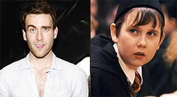

Matthew Lewis
Lewis nació en la ciudad de Leeds, Yorkshire del Oeste, Inglaterra, Reino Unido y se crio en su localidad de Horsforth. Es hijo de Lynda Needham Lewis y Adrian Lewis. Tiene dos hermanos: Chris Lewis y el actor Anthony Lewis. Asistió a la St. Mary's Catholic High School, Menston.
